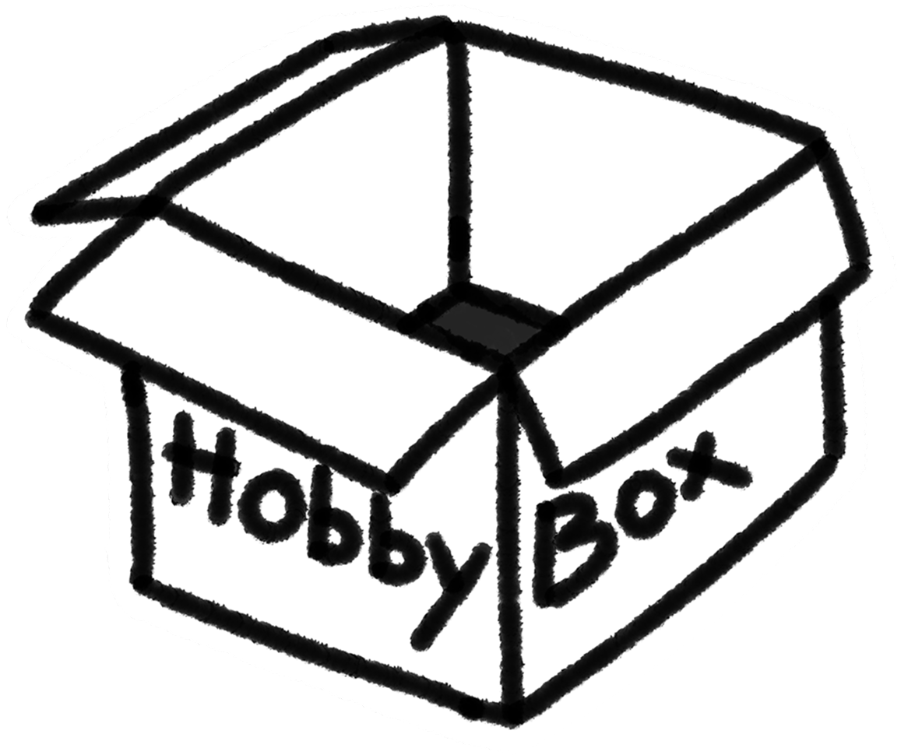

Hi!
I'm a PhD candidate at the Oxford Internet Institute, and part of
the
Synthetic Society Lab.
I research the socio-technical implications of synthetic data, and
how AI is reshaping how researchers access data.
more content blablabla...

- [06.2026] will be attending FAccT'2026 for the Doctoral Consortium (Montreal, Canada)
- [08.2025] contributed to an article by Teo Canmetin and Luc Rocher on the risks of facial recognition benchmarks
- [07.2025] joined the Aioi Lab (Oxford, UK) as a Research Scientist Intern, working on AI governance and synthetic data evaluation
- [07.2025] presented at the 'Privacy Research Day 2025 (Paris, France)
- [06.2025] presented at the 'Mind the AI-GAP' workshop (HHAI'25, Pisa, Italy)
- [05.2025] presented Access Denied at CHI'2025 (Yokohama, Japan)
- [05.2025] was awarded the St Catherine's College Scholarship
- [03.2025] obtained Best Paper Honorable Mention at CHI'2025 for Access Denied
- [12.2024] was awarded the Oxford Women in Computer Science Society (OxWoCS) Scholarship, supporting my attendance to CHI'2025
- [12.2024] submitted expert feedback on the EU DSA Article 40 regarding data access provisions for researchers, under the lead of Diyi Liu and Manuel Tonneau [see blog post]
- [06.2024] was awarded the St Catherine's College Light Graduate Scholarship
- [01.2024] won an award for an ML competition for Digital Green on yield prediction
- [11.2023] joined the Future Impact Group
- [10.2023] started my PhD at the Oxford Internet Institute as a Clarendon Scholar